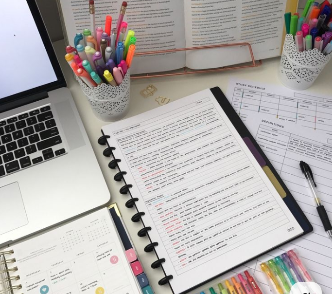
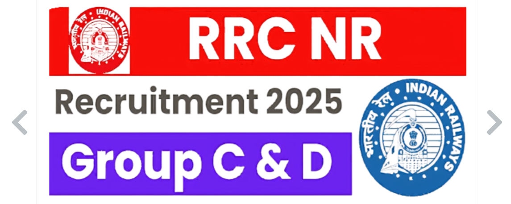

सरकारी Job vs Private Job (2025 Updated Guide)
2025 में कौन-सी नौकरी आपके लिए बेहतर है? Honest Comparison!
परिचय
आजकल हर student या job seeker के मन में यही सवाल होता है – Sarkari Naukri better है या Private Job?
दोनों की अपनी जगह advantages और challenges होते हैं। इस blog में हम 2025 के हिसाब से एक honest comparison करेंगे ताकि आप best decision ले सकें।
🏆 Government Job (सरकारी नौकरी) के Benefits
- Job Security (नौकरी की सुरक्षा): Sarkari jobs की सबसे बड़ी पहचान है – permanent job security. कोई भी economic crisis हो, आपकी job safe रहती है।
- Attractive Benefits & Allowances: Govt employees को मिलते हैं – HRA, DA, Medical benefits, और Retirement Pension. ये long term financial security देते हैं।
- Work-Life Balance: 9 to 5 fixed timing होता है। Weekend holidays, maternity/paternity leave, और yearly paid leaves – यह सब एक healthy balance बनाते हैं।
- Retirement Pension & Gratuity: Private job के मुकाबले, Sarkari job में pension system अब भी कई jobs में मौजूद है – specially defence, railways, teachers, etc.
🚫 सरकारी नौकरी की Limitations
- Selection tough होता है – लाखों applicants, limited seats
- Growth और Promotion धीरे-धीरे होता है
- Innovation या fast skill upgrade का कम scope होता है
🚀 Private Job (प्राइवेट नौकरी) के Benefits
- Faster Career Growth: Private sector में promotions और salary hikes performance-based होते हैं – मतलब मेहनत का result जल्दी मिलता है।
- Skill Development & Learning: Latest tools, new technologies, और modern work culture के कारण आप fast grow करते हैं।
- Flexible Work Options: Work from home, hybrid model, part-time – ये सब Private jobs में easily मिल जाते हैं।
- High Salary in Tech/Finance: अगर आप IT, Data Science, या Finance में हो तो Private jobs में salary packages Sarkari job से कहीं ज़्यादा हो सकते हैं।
🚫 प्राइवेट नौकरी की Challenges
- Job Security नहीं होती – कभी भी layoff हो सकता है
- Work pressure ज्यादा होता है – targets, deadlines
- Retirement benefits नहीं के बराबर होते हैं
📊 Sarkari Job vs Private Job – Comparison Table 2025
| Feature | Government Job (Sarkari) | Private Job |
|---|---|---|
| Job Security | ✅ High | ❌ Low |
| Salary Growth | ❌ Slow | ✅ Fast |
| Skill Development | ❌ Limited | ✅ High |
| Work-Life Balance | ✅ Balanced | ❌ Mostly Unbalanced |
| Retirement Pension | ✅ Available (in most jobs) | ❌ Not Available |
| Work From Home Option | ❌ Rare | ✅ Available in many roles |
| Exam/Entry Barrier | ❌ High (Competitive Exams) | ✅ Direct Interview Based |
| Innovation & Exposure | ❌ कम | ✅ ज्यादा |

🤔 2025 में क्या बेहतर है? (Final Thoughts)
अगर आप चाहते हैं: Permanent job with stability, Less work pressure, Long-term retirement benefits – तो Sarkari Job is best for you.
लेकिन अगर आप चाहते हैं: Fast growth, Skill development, High income with flexibility – तो Private Job will suit you more.
📢 Real Update (2025 Sarkari Jobs)
इस साल UPSC, SSC CGL, Railway NTPC, और State CET में लाखों भर्तियाँ आने वाली हैं। अगर आप अभी तैयारी शुरू करते हैं, तो आपके पास बढ़िया मौके हैं।
🎯 Conclusion
Sarkari Naukri vs Private Job की लड़ाई नहीं है — यह एक personal choice है based on your goals.
आपके लिए कौन-सी नौकरी perfect है? नीचे comment करके बताएं।
और अगर ये पोस्ट helpful लगी हो तो अपने दोस्तों के साथ ज़रूर share करें!
Related Blogs

